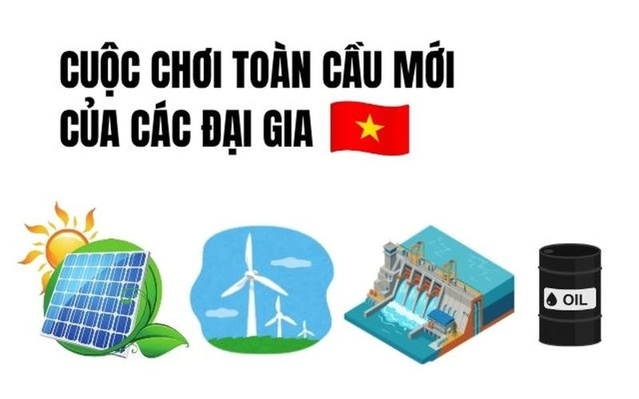

🔥Tỷ phú Phạm Nhật Vượng, bầu Hiển cùng loạt ông lớn Xuân Thiện, ROX, PVN đổ hơn 5,5 tỷ USD vào một cuộc chơi toàn cầu mới, vươn sang tận Trung Á, Bắc Cực
PVN: Giá hiện tại Thay đổi Xem hồ sơ doanh nghiệp TIN MỚI Trong bối cảnh nhu cầu năng lượng liên tục tăng và quá trình chuyển dịch sang các nguồn điện sạch diễn ra mạnh mẽ, nhiều doanh nghiệp Việt Nam không chỉ mở rộng đ